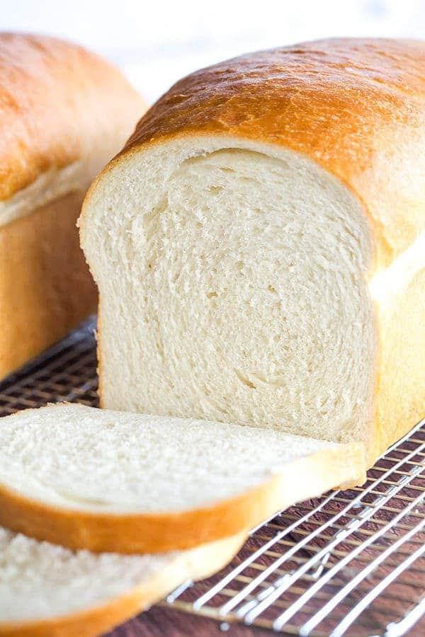
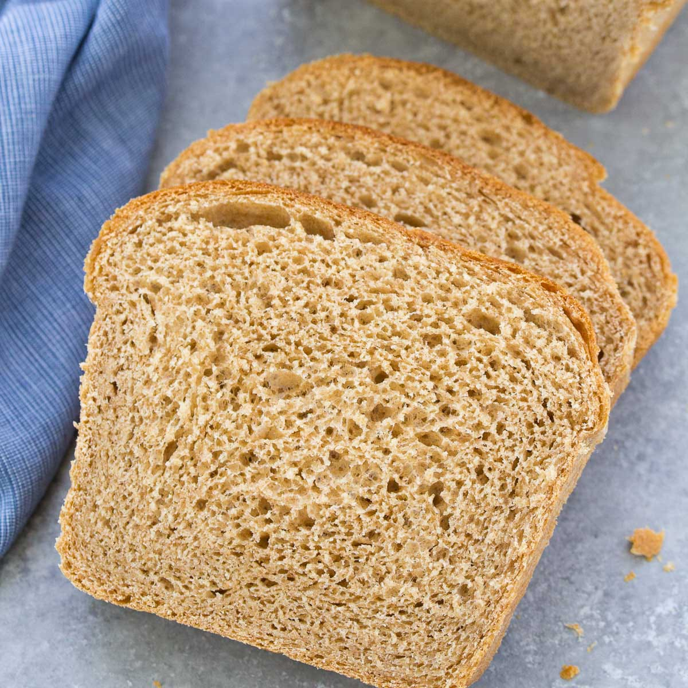

🍞 BAKES
🍞 Classic White Bread

Ingredients
2 1/4 tsp dry yeast
1 1/2 cups warm water
2 tbsp sugar
1 tbsp salt
2 tbsp unsalted butter, softened
4 cups all-purpose flour
Procedures
Dissolve yeast in warm water with sugar. Let it sit for 5 minutes until foamy.
Add salt, butter, and half the flour and mix well.
Gradually add the remaining flour and knead for 8-10 minutes until the dough is smooth and elastic.
Place the dough in a greased bowl, cover, and let it rise for 1 hour or until doubled in size.
Punch down the dough, shape into a loaf, and place in a greased loaf pan.
Cover and let it rise for another 30-45 minutes.
Preheat oven to 190 degree celsius and bake for 25-30 minutes until golden brown.
🌾 Whole Wheat Bread

Ingredients
2 1/4 tsp active yeast
1 3/4 cup warm water
1 tbsp honey
2 tbsp olive oil
2 cups whole wheat flour
1 1/2 cups all-purpose flour
1 1/2 tsp salt
Procedures
Dissolve yeast in warm water with honey. Let it sit for 5 minutes.
Add olive oil, whole wheat flour, and salt. Stir until combined.
Add all-purpose flour gradually, kneading for 8-10 minutes until the dough is smooth.
Place the dough in a greased bowl, cover, and let it rise for 1 hour.
Punch down the dough and shape it into a loaf.
Let the dough rise in a greased loaf pan for 30-45 minutes.
Preheat oven to 190 degree celsius and bake for 30-45 minutes.
🧄 Cheesy Garlic Bread

Ingredients
3 cups all-purpose flour
1 tbsp sugar
2 1/4 tsp active dry yeast
1 tsp salt
3/4 cup warm milk
1 tbsp olive oil
1 cup shredded cheese (cheddar or mozzarella)
3 cloves garlic, minced
1 tbsp dried parsley
Procedures
Dissolve yeast and sugar in warm milk. Let it sit for 5 minutes.
Add salt, olive oil, half the flour. Stir until combined.
Gradually add the remaining flour and knead until smooth.
Fold in cheese, garlic, and parsley. Knead until evenly distributed.
Place the dough in a greased bowl, cover, and let it rise for 1 hour.
Shape the dough into a loaf and place it in a greased pan.
Let the dough rise for another 30 minutes, then bake at 190 degree celsius for 25-30 minutes.